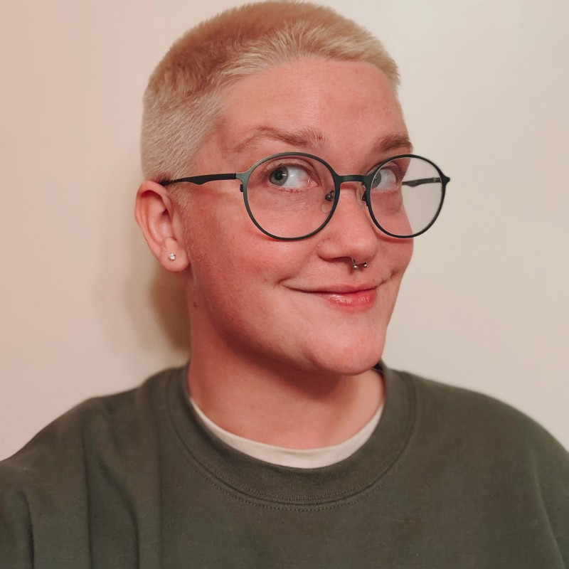

My career has never followed a straight line... and that's exactly what makes me effective.
I spent nearly a decade as a professional musician within the Air Force Bands, performing in high-stakes environments where precision and adaptability weren't optional. That experience rewired how I think: recognizing patterns in noise, staying calm under pressure, and adjusting in real time. Turns out, those skills translate well to digital defense.
Today I work as both a Cyber Risk Management Engineer in the private sector and a Cyber Defense Analyst with the Air National Guard, with experience across vulnerability management, application security testing, threat hunting, and GRC. I approach every problem the same way I approached music: with curiosity, discipline, and a willingness to rethink what I thought I knew.
specialties: threat hunting · network security monitoring · detection engineering · vulnerability management · risk management